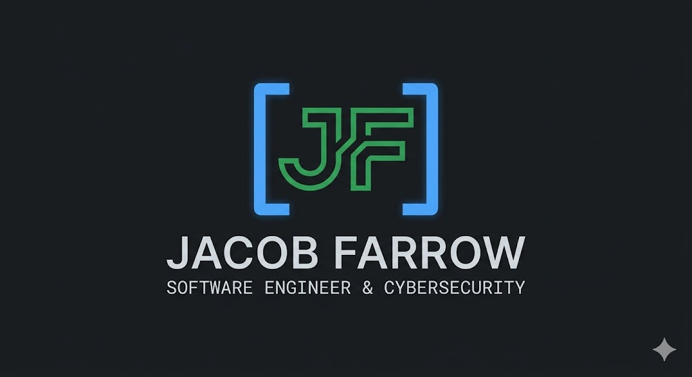
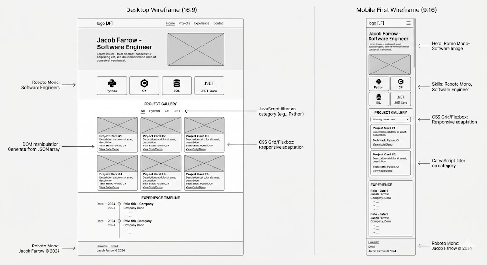

Purpose and Audience
The purpose of this site is to showcase my skills in building robust, scalable systems and my dedication to algorithmic precision[cite: 4, 5]. The intended audience includes technical recruiters and engineering managers looking for a Software Engineer with experience in .NET Core, Python, and C#[cite: 2, 23, 24].
Description of the Dynamic Elements
I will use JavaScript to create a dynamic "Project Gallery" that utilizes an Array of Objects to store project metadata.
The site will use array methods like .filter() to sort projects by technology stack and .forEach() to inject the data into the DOM.
Conditional branching will handle scenarios where search results are empty, and event listeners will respond to user-selected filter buttons.
Logo

The logo features terminal-style brackets to represent my focus on software engineering and cybersecurity[cite: 2, 20].
Colors and Fonts
Color Palette
- Primary Background: #0D1117 (Dark Navy)
- Accent Color: #58A6FF (Bright Blue)
- Typography Color: #C9D1D9 (Light Gray)
- Action Color: #238636 (Terminal Green)
Fonts
- Headings: "Roboto Mono", monospace (Reflects a technical, code-centric aesthetic).
- Body Text: "Inter", sans-serif (Ensures readability on mobile-first designs).
Content
Introductory Statement
Innovative Software Engineer focused on building robust, scalable systems through future-thinking architectural design[cite: 4].
Professional Experience Highlights
- BYU-Idaho: Performed root-cause analysis on system failures to implement long-term fixes[cite: 7, 8].
- Northamptonshire County Council: Programmed 250+ assistive systems, reducing caregiver response time by 20%[cite: 10, 12].
- Volunteer Leadership: Directed regional workflows and managed team logistics[cite: 16, 18].
Technical Skills Data
Languages: Python, C#, SQL, and JavaScript[cite: 23]. Tools: .NET Core, Git, VS Code, and Rider[cite: 24, 25].
Wireframe
The layout follows a mobile-first approach with a single-column stack for phones and a multi-column grid for desktop screens.
